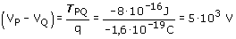

Si hay que realizar un trabajo de 8·10-16
J para llevar el electrón de P a Q es porque el trabajo del campo
eléctrico en este desplazamiento vale: -8·10-16
J

En la expresión de la d.d.p la carga se
pone con signo
Justificación del signo del resultado:
| |
Si el trabajo del campo en el recorrido PQ es negativo
la fuerza estará dirigida de Q a P. Si la fuerza eléctrica
sobre el electrón, que es negativo, está diri-gida
de Q a P el campo irá de P a Q.
Como el campo apunta hacia los potenciales decrecientes, VP
> VQ y por tan-to la d.d.p (VP - VQ)
será positiva |
|